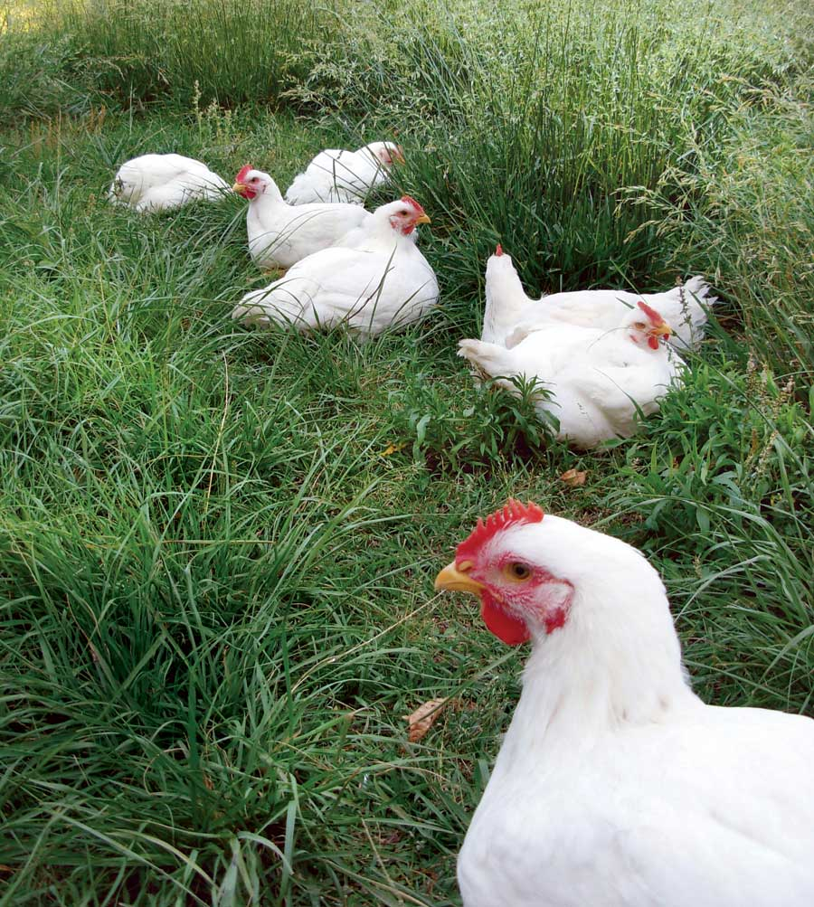

Dear Mother: August/September 2009
Readers’ letters about raising meat chickens, a Swiss chard offer, overpopulation, corn ethanol and water, and much more.
Letters from our readers
August/September 2009
We received a flock of responses to last issue’s Raising Chickens for Meat article. Pat Bokma in New Jersey reports that some local laws prohibit home slaughter of chickens - apparently slaughterhouses are considered more humane than home butchering in the Garden State. From Oregon, Jessica Murphy suggests reducing processing time by skinning chickens, rather than plucking them. And Elizabeth Stevens in Kansas reminds us that industrial chicken breeds are abused no matter how kind their keepers may be, thanks to breeding that makes them grow so fast their legs often break under their own weight. (If we all toured factory poultry farms, sales of chicken meat and eggs would plummet overnight; the conditions are truly inhumane by almost anyone’s definition.)
We continue to receive tons of letters about the population issue; you can read a few more here. Plus, we continue to hear from some readers who are adamant that the “global warming crisis” is a hoax.
- MOTHER
Local is Illegal?!
I enjoyed reading your June/July 2009 issue, but was surprised by your article Raising Chickens for Meat. Not surprised by the excellent article, but by the fact that you didn’t mention caution when slaughtering your own food. Doing so in my area would have the long arm of the law and the local chapter of the American Society for the Prevention of Cruelty to Animals (ASPCA) on my doorstep.
I live in a rural area of southern New Jersey on approximately four acres. We used to eat our rabbits. I will not say how they got from hutch to oven, but if we were to do as your chicken article instructed, I would have to pay a fine and go to court. I can raise any type of animal for food, but the law requires me to transport them to a slaughterhouse for processing. I wonder if I would get back my meat or someone else’s? And what would this cost?
I’m sorry to say I live in an area where your article would get me - not my chicken - in hot water.
Pat Bokma
Vineland, New Jersey
We Can Do Better
I enjoyed Gwen Roland’s very practical article Raising Chickens for Meat. It was upsetting, however, to read about chickens bred to plump up so fast in their short lives that their legs break under their own weight. This sounds like animal abuse to me. Surely we can do better by chickens and still raise cost-effective livestock, yes?
Elizabeth Stevens
Lawrence, Kansas
Yes, we can. This is one reason many people choose heritage breeds. - MOTHER
Wowed by ‘What to Plant Now’
The What to Plant Now info on your website is the best! Better than anything I have found printed for our location. The site has really helped me plan a better garden, and I’m sure many others will agree. Thanks for all you do!
Dawn Lopresto
Ocala, Florida
The Golden Rule
Your June/July issue reminded me how thankful I am to be who I am and live where I do. As my thinning hair has turned white, I’ve become far more tolerant. I can read or not read letters to the editor and ads I like or dislike.
I choose to take the teachings of the Bible far more literally than many do, and still consider the edict “Be fruitful and multiply” to be in effect, since I haven’t read a “retraction” by God.
I am able to accept others’ choices of lifestyles and ask that all others do the same for me. As individuals, we simply do not have the moral authority to impose our views on our neighbors by personal force or legislative dictate, without imposing on the liberties of others.
Thank you for your efforts to produce a fine product of interest to so many varied folks.
Alan LaBar
White Earth, North Dakota
Offering Swiss Chard Seeds
I was glad to see Swiss chard featured (All About Growing Swiss Chard). Many years ago, I bought a packet of chard seeds in Spain. The packet said ‘Amarillo’ (yellow) in Spanish, but also ‘Blonde de Lyon,’ which indicated that it was a French variety. I have grown it ever since, re-selecting when it gets mixed with the standard dark green varieties that grow near here. It reseeds all over my garden.
This variety is a very pale yellow-green with broad white ribs, and very savoyed. When fully grown, it’s a stunning plant. If left to go to seed, it will reach 5 feet or higher, with seed stalks waving all over the place.
If readers would like to try it, please send me a self-addressed, stamped envelope, and I’ll send seeds as soon as they are mature.
Jeffrey Dickemann
2901 Humphrey Avenue
Richmond, CA 94804
DIY Three-wheeled Car Plan
As I recall, there was more information on the three-wheeled 3VG car in the original article, Three Wheel Cars: Our 3VG DIY Car Leans Toward the Future (September/October 1983), than I find on my Archive CD. Am I mistaken? If not, then are any additional details available?
Browne Altman
Jacksonville, Florida
Over the years, folks have asked if we still have the plan packet for the prototype 3VG - unfortunately, we don’t. If any of you have a copy of the plans, we’d love to hear from you so that we can make it available again. - MOTHER
Adobe Architecture Not for Everywhere
I was concerned by Natural Building with Earth. In the United States, substantial parts of our desert areas are seismically active, and very dangerous for earthen homes.
Tragedies in the Middle East show how dangerous this activity can be to what are effectively mud huts.
It’s nice maintaining the art of adobe construction, but it’s far safer to trust in technology and modern building codes for the structure you’ll be sleeping in.
Current engineering trumps a revived “heirloom” method of building when you are talking about earthquake country.
Gary Munson
Sparks, Nevada
A Great Clothes-drying Rack
In reference to your clothesline article, The Convenient, Sturdy Outdoor Clothesline, Steve’s tip about a drying rack is spot-on. I have used clotheslines and drying racks for years and can recommend Real Goods’ New England Clothes Dryer as the best I’ve ever used.
It holds a large load of clothes, it’s beautifully constructed, and it looks as good as it did the day I bought it - and it has really been used! It lets me dry clothes on rainy days and all through winter. It truly was a good investment.
Regarding raising meat chickens, we have raised them for years. We skin our chickens, instead of plucking off all the feathers. It saves us many hours of work, and since free-range chickens are always tougher than store bought, we almost always cook them crockpot-style or other ways where the skin isn’t necessary.
Jessica Murphy
La Grande, Oregon
Respecting the Food Web
I’m always a bit wary when people use killing as a way to get rid of pesky critters, as suggested in the blurb about controlling grasshoppers in Poultry Pest Control. Even if we find those critters pesky, another animal finds them tasty, unless they become extinct. Then what happens to the food web? I hope we, as a species, learn to get more creative so that we don’t have as big an impact on the food web.
Emily Ries
Strongsville, Ohio
The Neato Neuton
I bought a Neuton mower after reading about them a few years ago in Mother Earth News. I love it and use it often. Nothing ever goes wrong with it. I bought a new battery and a new blade after three years. The grass catcher is handy as I put all the cuttings on my gardens.
Meg Perry
Clay Center, Kansas
An ‘Exceptional’ Magazine
I just re-subscribed after taking a break for a few years. I have been depending on the library for my Mother Earth News fix, but the magazine has become so exceptional that I find it too difficult to surrender by the due date. I thought I was treading more lightly on the planet by using the library, but I make so many copies of the articles that I might as well subscribe!
Pamela Quackenbush
New Hudson, Michigan
Global Warming Voodoo
I wish to cancel my subscription to Mother Earth News. I have seen this magazine morph from being a place for ideas about conservation and saving money to becoming a place of fanatical worship of the green religion - which is a theory, not a fact! I do not and will never believe that so-called “global warming” is man-made! I can’t stomach the idiot writers that think green is God! Fools! I was not raised to believe in witchcraft or voodoo.
Char Close
Houston, Texas
‘Wonderfully Useful’
I wanted to say how pleased and appreciative I am of your recent articles on sustainability and renewable energy. In the April/May 2009 issue, this was especially true of Planning for a Sustainable Human Future, by Bryan Welch, and A Plan for the Solar Revolution, by Denis Hayes. Excellent content! It’s so wonderful to have your magazine covering these crucial issues, along with all the wonderfully useful gardening info.
Salena Levi
Cummington, Massachusetts
It’s the Tilt, Not the CO2
Please stop the propaganda garbage on the subject of global warming. There is not any scientific proof of it. Yes, we agree that some glaciers are melting; however, many areas of the globe are having record cold temperatures. The reason is that the globe has changed a small amount on its axis. Not hard to figure out. If your magazine keeps publishing the unfounded garbage on the so-called global warming, I will no longer subscribe.
George Horvat
Tigerville, South Carolina
‘The Biggest Hoax Ever’
Carbon dioxide is not pollution! It’s here for a reason. Plants breathe it, and then we breathe the oxygen they make. Man-caused global warming is the biggest hoax ever perpetuated on the populace.
Gregg Macklin
Columbus, Indiana
Keep It Coming
This letter is in response to people who want the political articles to stop. One letter in particular truly set me off. Dennis Douglas (Dear Mother) wrote that the global warming crisis is scientifically disproved. He must have been reading the reports written by “Big Oil” to justify more drilling and oil-funded projects. I don’t know what planet some of these people live on, but just look at satellite views of the Arctic Circle from the past 30 years, and you can see for yourself that it’s melting.
Kudos to Mother Earth News for helping to stop that. Keep the articles coming. I read your magazine cover to cover and usually start on my walk back to the house from the mailbox.
Kathryn Kenner
Cape May, New Jersey
Fewer Pets on the Planet
Another important part of environmental sustainability is reducing the number of pets you keep. Hard as it is to swallow, our pets have a huge impact on the environment, one rarely discussed these days for fear of offending pet lovers. Feeding cats, dogs and other pets requires enormous acreage - land that was once wildlife habitat - and energy for processing and shipping food.
Jane Dolan
Montville, New Jersey
‘Nice and Chewy, Soft and Moist’
I finally got around to trying the bread recipe in Five Minutes a Day for Fresh-baked Bread. Before trying this recipe, I hadn’t ever been able to get bread to actually come out of the oven like bread; the loaves were usually bricks. This bread comes out nice and chewy on the outside, soft and moist on the inside. Since I started making this recipe, we haven’t eaten any other bread. The thought of buying store-bought bread gives me the shivers.
Tammy Hawley
Belleville, Ontario
The Future Price of Steak
Ethanol is made from corn, and it takes lots and lots of water to produce ethanol - more than 4 gallons of water to make 1 gallon of ethanol. Yikes! The next thing we’re headed for is a water shortage, and this one won’t be from drought. This year the United States is planning to make 6 billion gallons of ethanol. That’s 24 billion gallons of water! That doesn’t include the amount of water used on the corn during the growing process. Doesn’t sound so environmentally friendly anymore, does it? So what did they do with all that corn before it was being used for fuel? They used it in our food and to feed livestock and poultry. Well, pretty soon we won’t have enough corn to use for these things. The prices will go up, up, up, and right now I don’t think America can afford that. So, dads, you better put away that grill because your steaks aren’t going to be cheap anymore.
Thomas Uhler (Age 11)
Lawrence, Kansas
Humans Still Debating Humans
Still Debating the Obvious
I don’t know whether to laugh or to cry when I see that a debate still exists over human population issues, especially among Mother Earth News readers who clearly should know better. It’s almost incomprehensible, not to mention disappointing, that at this stage there is still doubt over whether the exploding human population is at the center of the resource, pollution, climate and sustainability crises of today.
All of this underscores the enormity of this problem, when even now we are polarized by population issues despite decades of irrefutable evidence that collectively cry out for us to control our numbers.
John Caldas
Cairo, New York
A ‘Ridiculous’ Plan
I found Planning for a Sustainable Human Future a ridiculous response to the outcry from the public. The reality is that population control is nothing more than control of the people, and the people that are affected most by these racist, sexist and classist policies are poor men, women and children of color. Forced sterilization, neo-liberal globalization, forced famines and militarization aren’t even mentioned as real global problems. The reality is that there is enough food produced daily so that every inhabitant could consume 4.3 pounds of food. The problem is waste and access to this food. We must re-educate ourselves to escape the lies that turn us against each other and stop blaming women’s fertility as the culprit of environmental degradation.
Melissa Nielsen
Moab, Utah
Speaking the Truth
Unlike the mainstream media, Bryan Welch and Mother Earth News speak the truth (Planning for a Sustainable Human Future). The current generation and the two following are facing the most colossal challenges ever - the need for human conservation, population stabilization (and orderly decline) and sustainable economies. All three are closely interconnected, and are absolutely necessary for a sustainable world. This essay is right-on and says it all. Thank you, thank you, thank you, Bryan Welch and Mother Earth News!
Robert Fireovid
Greenbelt, Maryland
6.7 Billion ... That’s Why
I have stewed over the replies to Three Mountains We Must Climb for two months now, and I have decided to finally spout off myself. The problem with controlling human population stems from the archaic religious beliefs that: (1) Humans are the most important thing in the universe other than the omnipotent being many of them believe in, and (2) Humans must breed uncontrolled and cover the Earth. Two thousand years ago, it was necessary to have many children because of high mortality rates. Today, this is no longer the case. Why is there a water shortage? Because there are 6.7 billion bags of water walking around on our planet. Why are famine and disease on the rise? 6.7 billion humans. Why is there pollution? 6.7 billion humans. Why, why, why, why, why? 6.7 billion humans.
Thomas Rundell
Munising, Michigan
Population Issue Demands Creativity
Planning for a Sustainable Human Future was excellent. I support many environmental protection organizations, human rights groups and sustainability movements. Very few of these groups are willing to discuss the vital issue of human population growth.
Without consciously and collectively working to maintain sustainable populations worldwide, we will inevitably face ever-increasing food shortages, starvation, wars over resources, environmental devastation, epidemic diseases and poisoning of the environment. Population stabilization could easily be achieved through education and free and easy access to various methods of birth control. Compassionately and creatively dealing with this problem now will prevent the horrific and devastating population reduction that will inevitably occur if this issue is ignored.
Rand Guthrie
Snohomish, Washington
Testing MOTHER’s Garden Ideas
Great from the Start
What an inspiration we found in the Garden Know-how department Keeping Up with Your Garden by Barbara Pleasant! My husband made a table for me years ago when we had sheep so I could skirt the wool. After reading the article, he decided that it would be easy to convert the table into a garden work station. This was instantly an asset, as I washed the first batch of lettuce and radishes for our salads. It was great to keep the messy stuff out of the kitchen.
Chris Clampitt
Sheridan, Illinois
Instant Garden Success
A few months ago, I saw the article How to Make Instant, No-dig Garden Beds. I have limited space and no tiller, so I decided to give it a try. It has worked perfectly so far. I have about twenty 40-pound bags of potting soil sitting in my side yard. I planted four plants or seeds in each bag. I have cherry and regular tomatoes, broccoli, cantaloupe, green and red peppers, cucumbers, and green beans. So far they are doing great. I got some rocks and put them around the outside of the bags to form a bed, and to keep the lawn mower from cutting the bags.
Polly Wheeler
Greensburg, Indiana
|
 GWEN ROLAND From breed choice to processing laws, readers responded to Gwen Roland’s article, “Raising Chickens for Meat.” |
 KEITH WARD Reader Jeffrey Dickemann has offered to send chard seeds to interested gardeners. |
 ISTOCKPHOTO/BILL GROVE The increasing demand for corn to make ethanol exacts a heavy price in water usage. |
|
MATTHEW T. STALLBAUMER Readers continue to send in letters regarding the population discussion, covered in MOTHER EARTH NEWS in December 2008/January 2009 and April/May 2009. |
CHRIS CLAMPITT Chris Clampett’s husband converted a homemade table into this garden work station after reading “Keeping Up with Your Garden” by Barbara Pleasant. |
FOTOLIA/AZPWORLDWIDE Reader letters illustrate that some still believe global climate change is a hoax. |